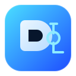

01
Pick what to protect
Add folders, files, and bookmark exports that matter most.

Backup CompanionSet a backup drive once, choose what matters, and let the app keep your customer or household data safe with one-click sync and scheduled reminders.
Backup Status
Checking backup health.
Last backup
Never
Snapshots kept
0
Quick Setup
01
Add folders, files, and bookmark exports that matter most.
02
Browse to the right USB or external HDD, then use its existing folder or let the app create one.
03
Get nudges if a backup hasn’t happened recently enough.
04
See backup history, snapshots, and cloud sync recommendations in one place.
Step 1
Start with the essentials like Documents, Desktop, exported bookmarks, or customer project folders.
Settings
Review where backups go, how many copies are kept, and whether automation is enabled.
Destination
Not configured
Copies To Keep
3 copies
Automation
Manual only
Step 4
Use this area to confirm the last run, inspect available snapshots, and review cloud sync recommendations.
Last Backup
Never
No backup has been completed yet.
Snapshots
Cloud Health
Cloud check has not been run yet.
Customer Acceptance
Before using OBTools Automated Backups, the customer must review and accept these terms.
One Bite Technology provides this software as a convenience tool for local backup automation. The customer remains responsible for verifying that backups complete successfully and that restore copies are readable.
One Bite Technology is not liable for data loss, incomplete backups, device failure, media corruption, cloud sync problems, user error, malware, theft, or any direct or indirect damages arising from the use of this software.
The customer should maintain more than one copy of important data and should periodically test restore procedures. Continued use of this software indicates acceptance of these terms.